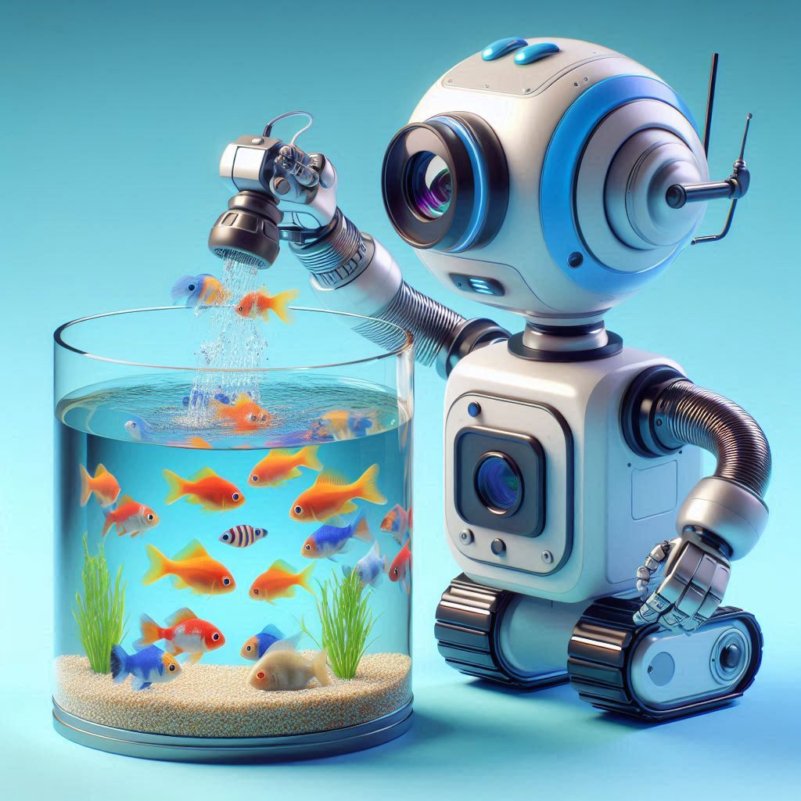

Nossa Tecnologia
Otimizando a Aquicultura com IA: Para um Futuro Sustentável
Na Bluemy, acreditamos que a inovação tecnológica é a chave para enfrentar os desafios da aquicultura moderna. Nossa tecnologia de inteligência artificial (IA) foi desenvolvida para otimizar a alimentação dos peixes, garantindo uma produção mais eficiente e sustentável. Aqui, explicamos detalhadamente como nossa solução funciona e os benefícios que ela traz para a indústria da aquicultura.
Como funciona a Tecnologia Bluemy
Monitoramento em tempo real
A base da nossa tecnologia é o monitoramento contínuo das condições ambientais e do comportamento dos peixes. Para isso, utilizamos:
- Sensores Subaquáticos: Dispositivos que medem parâmetros vitais da água, como temperatura, oxigênio dissolvido, pH e salinidade. Esses dados são cruciais para entender o ambiente em que os peixes estão vivendo.
- Câmeras Subaquáticas: Câmeras de alta resolução instaladas nos tanques de criação que observam o comportamento dos peixes, como sua movimentação e padrões de alimentação.
Coleta e análise de dados
Os dados coletados pelos sensores e câmeras são enviados para uma plataforma central de inteligência artificial. A IA analisa esses dados em tempo real, realizando várias funções críticas:
- Análise Comportamental: A IA identifica padrões no comportamento dos peixes que indicam quando estão com fome ou quando já foram suficientemente alimentados.
- Condições Ambientais: Avalia as condições da água para ajustar a alimentação com base em fatores que podem afetar a saúde e o apetite dos peixes.
- Tamanho e Crescimento dos Peixes: Acompanha o crescimento individual dos peixes, ajustando a quantidade de alimento conforme suas necessidades específicas.
Automação da Alimentação
Com base na análise da IA, a nossa tecnologia controla sistemas automatizados de alimentação, que são responsáveis por:
- Distribuição Precisa de Alimento: A IA calcula a quantidade exata de alimento necessária e o distribui de forma uniforme, evitando tanto o excesso quanto a falta de ração.
- Sincronização Temporal: A alimentação é ajustada em intervalos ideais, conforme os padrões de atividade dos peixes, para maximizar a eficiência da absorção de nutrientes.
Benefícios da Tecnologia Bluemy
Redução do Desperdício de Alimentos
Ao alimentar os peixes com a quantidade exata de ração necessária, nossa tecnologia minimiza o desperdício. Isso não só reduz os custos operacionais para os produtores, mas também diminui a quantidade de resíduos orgânicos liberados no ambiente aquático, ajudando a prevenir a eutrofização.
Melhoria da Saúde dos Peixes
A alimentação precisa e ajustada às necessidades individuais dos peixes promove um crescimento saudável e uniforme. Isso resulta em:
- Redução de Doenças: Peixes bem alimentados são menos suscetíveis a doenças, o que reduz a necessidade de antibióticos e outros medicamentos.
- Aumento da Sobrevivência: Menos desperdício de alimentos e melhores condições ambientais aumentam as taxas de sobrevivência dos peixes.
Sustentabilidade Ambiental
Com a redução do desperdício de ração e a diminuição dos resíduos orgânicos, nossa tecnologia contribui para um ambiente aquático mais limpo e saudável. Isso é fundamental para:
- Proteção dos Ecossistemas Aquáticos: Menos poluição significa menos impacto negativo nos ecossistemas marinhos e de água doce.
- Conservação de Recursos: A utilização eficiente dos recursos reduz a pressão sobre os estoques de alimentos e melhora a sustentabilidade geral da produção de peixes.
Eficiência Operacional
A tecnologia Bluemy permite uma gestão mais eficiente das operações de aquicultura, trazendo benefícios como:
- Redução de Custos: Menos desperdício de alimentos e melhores condições de saúde dos peixes reduzem os custos operacionais e aumentam a rentabilidade.
- Aumento da Produtividade: Peixes mais saudáveis crescem mais rápido e de forma mais uniforme, resultando em maior produtividade e melhor qualidade do produto final.
Alinhamento com a Economia Azul
Na Bluemy, estamos comprometidos com os princípios da economia azul, que promovem o uso sustentável dos recursos oceânicos para crescimento econômico, melhoria dos meios de subsistência e empregos, ao mesmo tempo que preservam a saúde dos ecossistemas oceânicos. Nossa tecnologia de IA para otimização da alimentação de peixes é um exemplo claro de como a inovação pode apoiar práticas de aquicultura mais sustentáveis, alinhando-se com os objetivos de conservação e desenvolvimento sustentável.
Junte-se a nós nessa jornada e descubra como a Bluemy pode transformar suas operações de aquicultura, promovendo um futuro azul e sustentável.